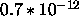
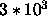

System variables are predefined variables that are set by the program and that are read-only for the user. The following system variables have the same semantics as the displayed variables in the graphical user interface:

Additionally there are two more system variables:
